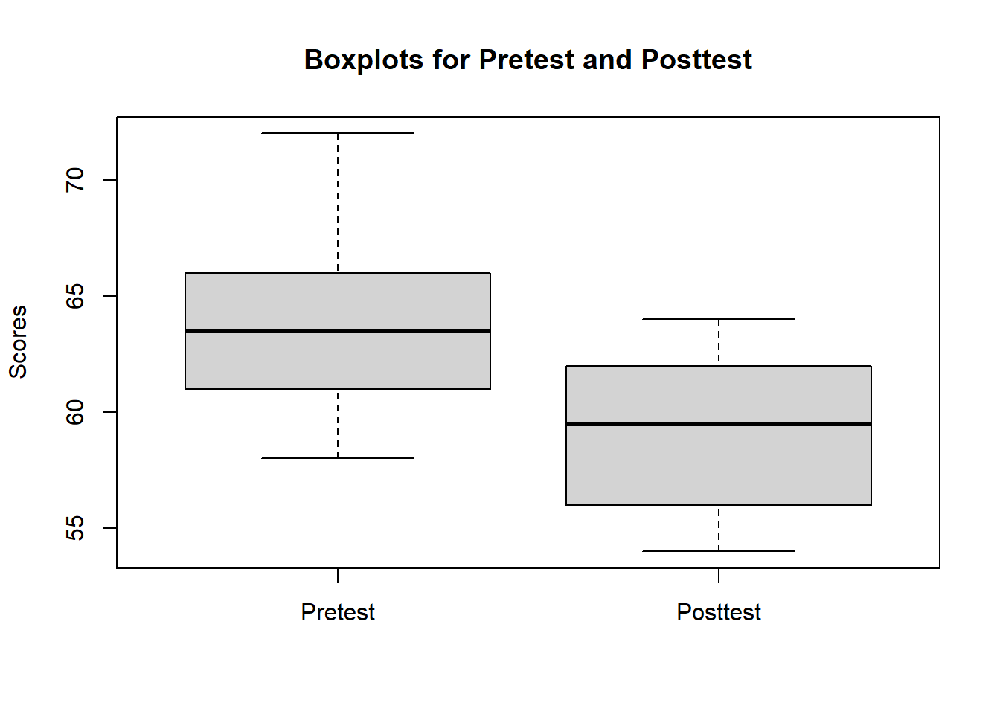
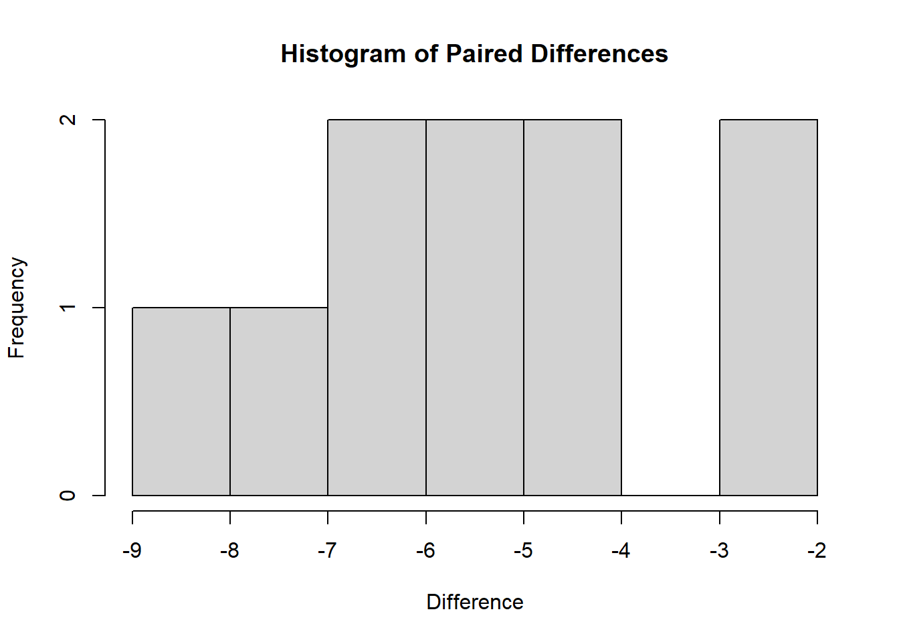
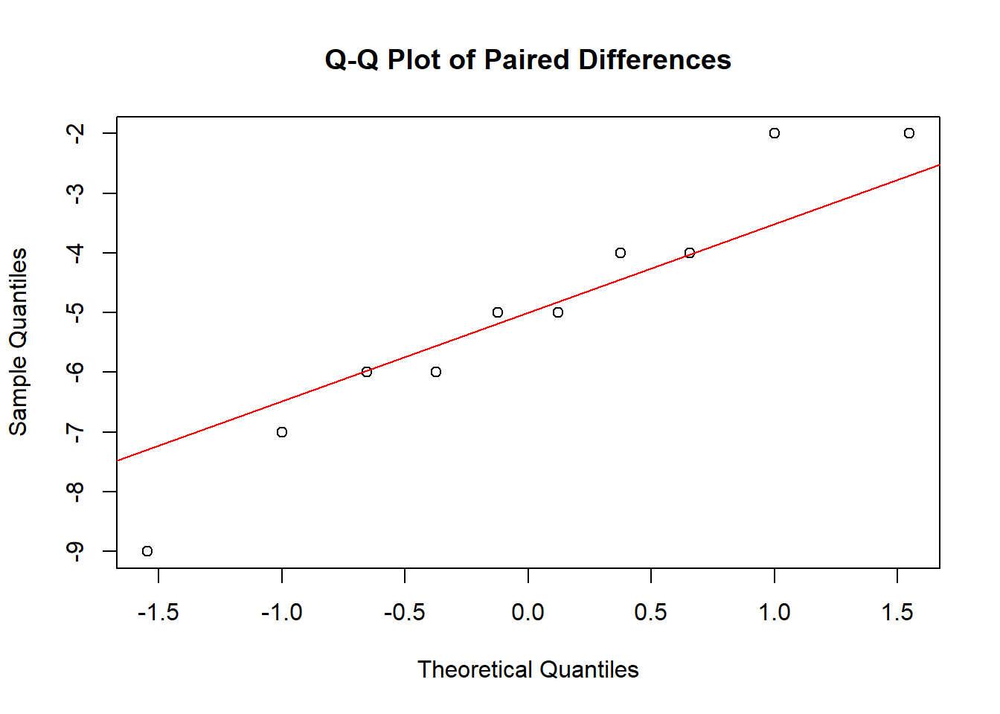

Chapter 12 Paired t-test
The paired samples t-test is used when the observations are collected from the same individuals or matched pairs (e.g., siblings, twins) under different conditions or at different time points. The purpose of the test is to determine if there is a significant difference between the means of the paired differences.
The paired t-test is based on the following null (H₀) and alternative (H₁) hypotheses:
H₀: μ_d = 0 (There is no significant difference between the means of the paired differences.)
H₁: μ_d ≠ 0 (There is a significant difference between the means of the paired differences.)
Mathematically, the test statistic for the paired t-test (t-value) is calculated using the following formula:
t = (M_d - μ_d) / (s_d / sqrt(n))
where:
M_d is the mean of the paired differences
μ_d is the population mean difference (0 in the null hypothesis)
s_d is the standard deviation of the paired differences
n is the number of pairs
The t-value follows a t-distribution with degrees of freedom (df) equal to n - 1.
The paired t-test is used when the observations within each pair are related or matched (e.g., pre-test and post-test scores of the same individuals, or scores of matched pairs like siblings or twins).The test compares the means of the paired differences rather than the means of the original observations.
Examples:
Comparing pre-test and post-test scores of students to determine the effectiveness of a teaching intervention.
Comparing the performance of students in two different courses taught by the same instructor.
Recommendations:
Use the paired t-test when you have dependent samples and are interested in the difference between the means of the paired differences.
Ensure the assumptions of the paired t-test are met (see below).
Sample size:
The sample size should be large enough to provide adequate statistical power to detect a meaningful effect.
The required sample size depends on the effect size, significance level, and desired power. It can be calculated using power analysis techniques (e.g., using the
pwrpackage in R).
Assumptions:
Paired observations: The observations within each pair should be related or matched, such as pre-test and post-test scores of the same individual, or scores of matched pairs like siblings or twins.
Random sampling: The pairs of observations should be obtained through random sampling from the population of interest. This ensures that the sample is representative of the population and the results can be generalized.
Normality of differences: The differences between the paired observations should be approximately normally distributed. This assumption can be checked using a variety of methods, such as histograms, Q-Q plots, or statistical tests like the Shapiro-Wilk test.
Independence of pairs: The pairs of observations should be independent of each other. In other words, one pair’s difference should not influence another pair’s difference.
Interval or ratio scale data: The data for the paired observations should be measured on an interval or ratio scale. This means that the data should have a meaningful zero point and equal intervals between adjacent values.
It is essential to ensure that these assumptions are met before conducting a paired t-test, as violation of these assumptions may lead to incorrect inferences. If any of these assumptions are violated, alternative statistical tests or data transformation methods might be more appropriate.
12.0.1 Performing the paired t-test using R
We will need data from two related groups or samples, typically stored in a data frame with two variables representing the paired observations. Then we will be loading the requirec libraries. We will be using pysch package.
swimdata <- read.csv("exampledata/Ch7_swim.csv")
summary(swimdata)
#> pretest posttest
#> Min. :58.00 Min. :54.00
#> 1st Qu.:61.25 1st Qu.:56.25
#> Median :63.50 Median :59.50
#> Mean :64.00 Mean :59.00
#> 3rd Qu.:65.75 3rd Qu.:61.75
#> Max. :72.00 Max. :64.0012.0.2 Data screening procedures
Before performing the paired t-test, it is essential to check the assumptions mentioned earlier, including the normality of differences and the presence of outliers.
Check for outliers using boxplots:
boxplot(swimdata$pretest, swimdata$posttest, names = c("Pretest", "Posttest"), ylab = "Scores", main = "Boxplots for Pretest and Posttest")
Check for the normality of differences using histograms or Q-Q plots:
# Compute the differences between paired observations
swimdata$difference <- swimdata$posttest - swimdata$pretest
# Create a histogram of the differences
hist(swimdata$difference, main = "Histogram of Paired Differences", xlab = "Difference", ylab = "Frequency")
# Create a Q-Q plot of the differences
qqnorm(swimdata$difference, main = "Q-Q Plot of Paired Differences")
qqline(swimdata$difference, col = "red")
We can also assess the normality using the Shapiro-Wilk test.
shapiro.test(swimdata$difference)
#>
#> Shapiro-Wilk normality test
#>
#> data: swimdata$difference
#> W = 0.95557, p-value = 0.734412.0.3 Performing the paired t-test
Paired t-test can be performed using t.test() function.
# Perform the paired t-test
t_test_result <- t.test(swimdata$pretest, swimdata$posttest, paired = TRUE)
# Print the test result
print(t_test_result)
#>
#> Paired t-test
#>
#> data: swimdata$pretest and swimdata$posttest
#> t = 7.3193, df = 9, p-value = 4.472e-05
#> alternative hypothesis: true mean difference is not equal to 0
#> 95 percent confidence interval:
#> 3.454652 6.545348
#> sample estimates:
#> mean difference
#> 5The output of the paired t-test includes several pieces of information:
t-value: The calculated t-statistic is 7.3193. This value represents the difference between the means of the pretest and posttest scores, in terms of standard deviations.
Degrees of freedom (df): The degrees of freedom for this t-test is 9, which is calculated as the number of pairs minus 1 (n - 1).
p-value: The p-value is 4.472e-05 (0.00004472), which is the probability of observing a t-value as extreme or more extreme than the calculated t-value, assuming the null hypothesis (no significant difference between the means of the paired differences) is true.
Alternative hypothesis: The output states that the alternative hypothesis is that the true mean difference is not equal to 0.
95% confidence interval: The confidence interval is [3.454652, 6.545348], which means that we can be 95% confident that the true population mean difference lies within this interval.
Sample estimates: The mean difference between the pretest and posttest scores is 5.
Based on this output, since the p-value (0.00004472) is less than the common significance level (0.05), we can reject the null hypothesis and conclude that there is a significant difference between the pretest and posttest scores in the swimdata dataset. The positive mean difference (5) indicates that, on average, the posttest scores are higher than the pretest scores. The 95% confidence interval suggests that the true population mean difference lies between 3.454652 and 6.545348.
If the assumptions of the paired t-test are met and the p-value is less than the chosen significance level, you can conclude that there is a significant difference between the means of the paired differences. Otherwise, if the assumptions are violated, you should consider alternative statistical tests or data transformation methods.